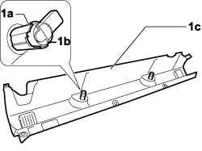
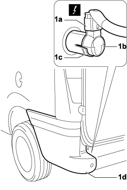

5580H36 PARKING OBSTACLE DETECTION SYSTEM REAR SENSORS - R.R. WITH REAR BUMPER REMOVED
- Path
- Procedures > 55 ELECTRICAL EQUIPMENT > 5580 SPECIAL ACCESSORIES > 5580H PARKING OBSTACLE DETECTION DEVICE > 5580H36 PARKING OBSTACLE DETECTION SYSTEM REAR SENSORS - R.R. WITH REAR BUMPER REMOVED
- Kind
- repair procedure (removal / refitting; the operation number is the code)
- Applies to
- engines: 1.4 8v, 1.6 16v, 1.3 JTD 16V, 1.9 JTD 8V; all production periods
- Interactive page
- https://sloeber94.github.io/elrnDB-fDbl/en/#/223000181
Applies to: engines: 1.4 8v, 1.6 16v, 1.3 JTD 16V, 1.9 JTD 8V; production: da 12/03; only with equipment: MY 2005
 Removing
Removing
 Refitting
Refitting1. Working at the bench, release the relevant parking obstacle sensor (1b) from anchorage clips (1a) and remove from the middle of rear bumper (1c)

Applies to: engines: 1.4 8v, 1.6 16v, 1.3 JTD 16V, 1.9 JTD 8V; production: da 12/03; only with equipment: MY 2005
If the sensor in question is on the side of the rear bumper, proceed as follows:
1. Working on the vehicle (right or left side), disconnect electrical connection (1a) from the relevant parking obstacle sensor (1b), release from anchorage clips (1c) and remove from the side of rear bumper (1d).
Description | Connector | |
|---|---|---|
1a | PARKING SENSOR UNIT |
Description | Connector | |
|---|---|---|
1a | PARKING SENSOR UNIT |

Applies to: engines: 1.4 8v, 1.6 16v, 1.3 JTD 16V, 1.9 JTD 8V; production: da 12/03; only with equipment: MY 2005
Refitting
RemovingCheck that the sensor is not damaged.
Fit the parking obstacle detection sensor in its seat and secure with the anchorage clips.
If the operation has been carried out on the sensor in the side rear bumper (right or left side), connect the electrical connection.
Description | Connector | |
|---|---|---|
- | PARKING SENSOR UNIT |
Description | Connector | |
|---|---|---|
- | PARKING SENSOR UNIT |